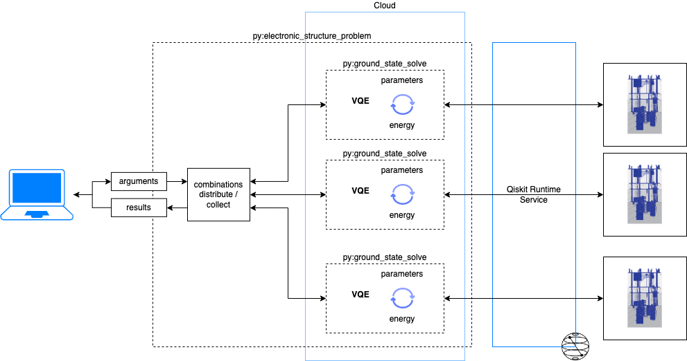
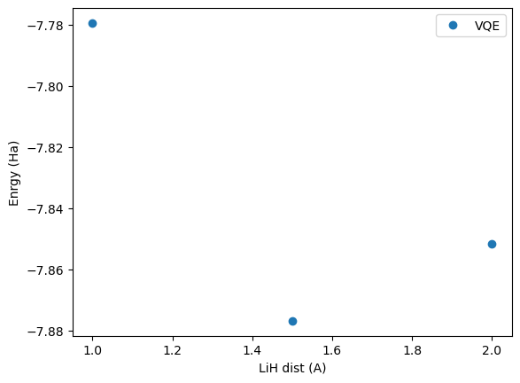

Example: solving electronic structure problem¶
Overview¶
This is overview architecture of this demo

Implementation¶
Let’s see how we can implement this. For full implementation see here.
from quantum_serverless import distribute_task, get
@distribute_task()
def ground_state_solve(
molecule: Molecule,
initial_point: Union[List[float], np.ndarray],
options: Optional[Options] = None,
service: Optional[Union[QiskitRuntimeService, Dict[str, Any]]] = None,
):
driver = PySCFDriver.from_molecule(molecule=molecule, ...)
es_problem = ElectronicStructureProblem(driver, ...)
ansatz = ...
operator = qubit_converter.convert(es_problem.second_q_ops(), ...)
optimizer = COBYLA(maxiter=500)
...
with Session(service=service) as session:
estimator = Estimator(session=session, options=options)
vqe = EstimatorVQE(
estimator=estimator,
circuit=ansatz,
optimizer=optimizer,
init_point=initial_point,
)
vqe_result = vqe.compute_minimum_eigenvalue(operator)
return vqe_result.optimal_value
def electronic_structure_problem(
molecules: List[Molecule],
initial_points: Optional[List[List[float]]] = None,
service: Optional[QiskitRuntimeService] = None,
backends: Optional[List[IBMQBackend]] = None,
):
...
function_references = [
hardware_efficient_ansatz(
molecule=molecule,
initial_point=initial_point,
service=service,
)
for molecule, initial_point in zip(molecules, initial_points)
]
return get(function_references)
...
state_handler = RedisStateHandler(...)
state_handler.set("results", {
"energies": energies,
"shifts": shifts
})
Execution¶
[1]:
import matplotlib.pyplot as plt
from quantum_serverless import QuantumServerless, Program, GatewayProvider
from quantum_serverless.core import RedisStateHandler
import os
[17]:
gateway_provider = GatewayProvider(
username="user",
password="password123",
host=os.environ.get("GATEWAY_HOST", "http://localhost:8000"),
)
serverless = QuantumServerless(gateway_provider)
serverless
[23]:
program = Program(
title="electronic_structure",
entrypoint="electronic_structure_problem.py",
working_dir="./source_files/",
description="Electronic structure program",
dependencies=["pyscf"]
)
job = serverless.run(program)
job
[23]:
<Job | 77df38b0-b8ad-4ce7-a8d6-150213acdcab>
[24]:
job.status()
[24]:
'SUCCEEDED'
[25]:
job.result()
[25]:
{'energies': [-1.1696351434408958, -1.094947029315754, -0.9811710247000608],
'shifts': [-6.60978477113754, -6.78195162695426, -6.870414678427144],
'result': [-7.779419914578436, -7.876898656270014, -7.8515857031272045]}
[26]:
# get results from job by accessing data written inside the job
results = job.result()
energies = results.get("energies")
shifts = results.get("shifts")
final_energies = [e + s for e, s in zip(energies, shifts)]
[27]:
# plot results
dist = [1.0,1.5,2.0]
plt.plot(dist, final_energies, 'o', label = 'VQE')
plt.xlabel('LiH dist (A)')
plt.ylabel('Enrgy (Ha)')
plt.legend()
plt.show()
